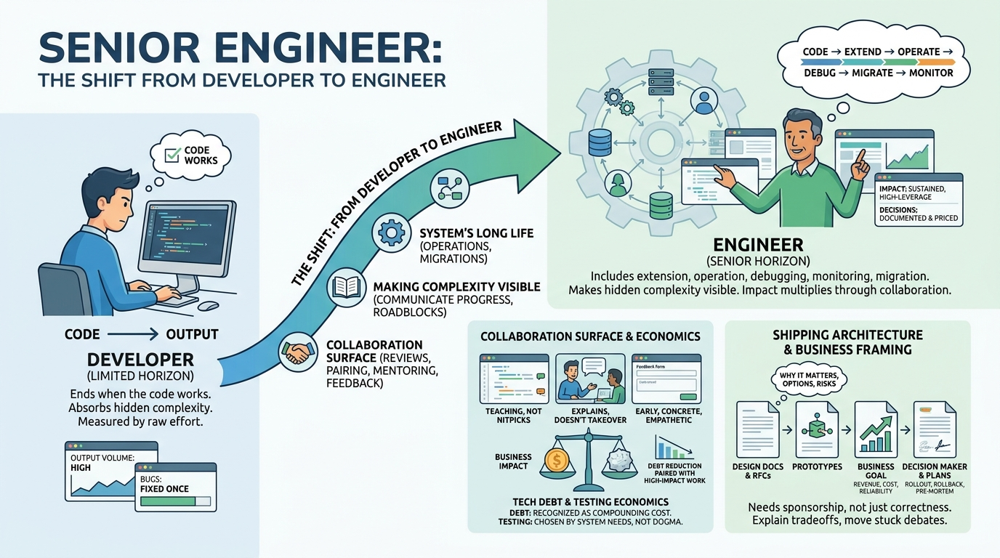

The Software Engineer's Guidebook
The Well-Rounded Senior Engineer

Image generated by Google Gemini (gemini-3-pro-image-preview)
The Software Engineer's Guidebook

Image generated by Google Gemini (gemini-3-pro-image-preview)